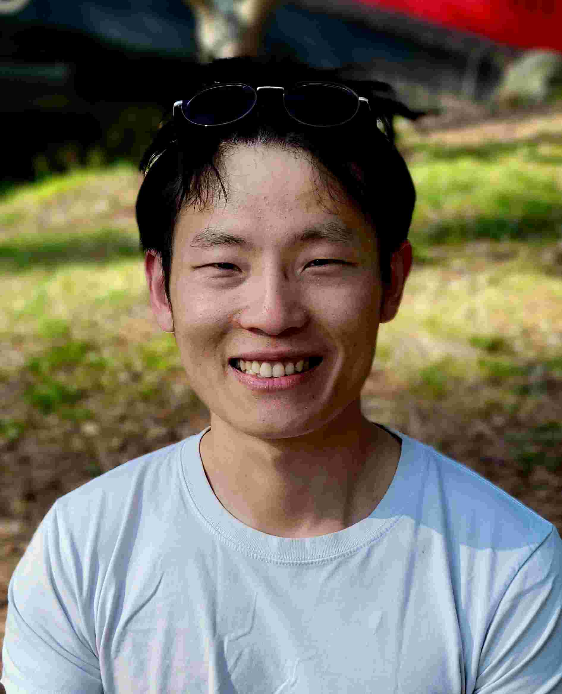

<div id="home">
    <ul> 
        <div style="display: flex; align-items: center;">
        
        <p style="margin-left: 20px;">
        Hi there! I'm Jinshui (pronounciated <i>jeen-shway</i>), many people also know me as Jimmy. 
        I was born and raised in Jining, China, and now live in Carrboro, NC, a small town filled with bikes and lovely people.
        </p>
        </div>
        I am a PhD student in the <a href="https://sites.google.com/view/bsel/home">Brain Stimulation Engineering Lab</a> at Duke University. Under the guidance of <a href="https://stephanmgoetz.github.io/">Prof. Stefan M Goetz</a>, I get to explore how power electronics can drive innovation in clean energy, green transportation, and even neuroscience! You can have a preview of my work here <a href="assets/cv_jz.pdf">in my cv</a>. <br><br>
        I'm always excited to connect with new people, whether it's for a project or friendship. Please feel free to email me at <u>jinshui.zhang@duke.edu</u><br><br>
  <h1>Selected Projects</h1>
  <ul class="posts">
    {% assign project_posts = site.posts | where: "category", "project" %}
    {% for post in project_posts %}
      <li><span>{{ post.date | date_to_string }}</span> &raquo; <a href="{{ post.url }}">{{ post.title }}</a></li>
    {% endfor %}
  </ul>
  <h1>Selected Publications</h1>
  <ul class="posts">
    {% assign publication_posts = site.posts | where: "category", "publication" %}
    {% for post in publication_posts %}
      <li><span>{{ post.date | date_to_string }}</span> &raquo; <a href="{{ post.url }}">{{ post.title }}</a></li>
    {% endfor %}
  <p style="font-size: smaller; text-align: right;"> 
  <a href="https://scholar.google.com/citations?user=c2XlhNUAAAAJ&hl=en">... more on google scholar</a>
  </p>
  </ul>
  <h1>Open Source Projects</h1>
  <ul class="posts">
    <li><a href="https://github.com/zhangjinshui-nerveee/odv/">odv:</a> A simple, smooth oscilloscope data viewer.</li>
    <li><a href="https://github.com/zhangjinshui-nerveee/ganttit">ganttui:</a> A text based gantt app for project management.</li>
    <li><a href="https://tms-samt.github.io/">tms-samt:</a> A TMS motor threshold (MT) estimation app.</li>
  </ul>
  <h1>Blog</h1>
  <ul class="posts">
    {% assign blog_posts = site.posts | where: "category", "blog" %}
    {% for post in blog_posts %}
      <li><span>{{ post.date | date_to_string }}</span> &raquo; <a href="{{ post.url }}">{{ post.title }}</a></li>
    {% endfor %}
  </ul>
</div>
